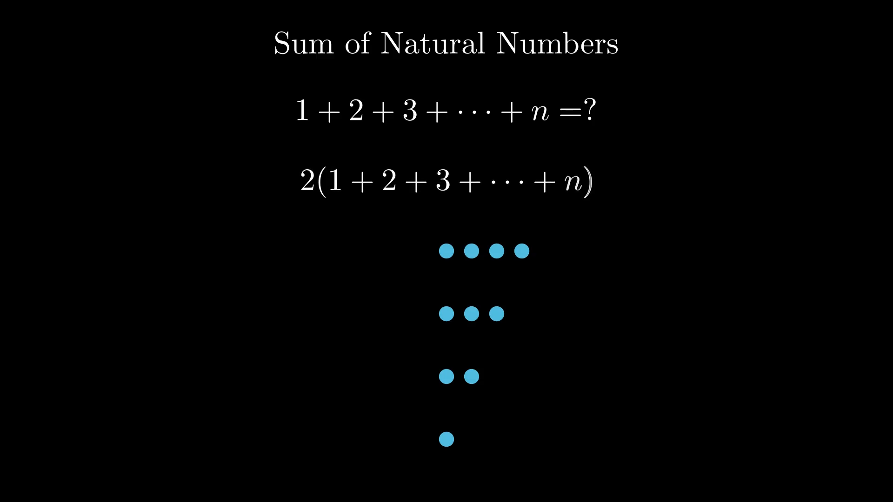
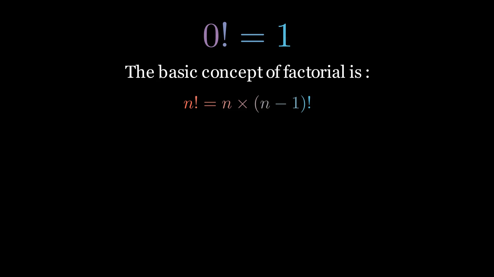

Math Illustrations 🎥
Your browser does not support the video tag.
Sum of Natural Numbers
Learn how the formula for the sum of the first n natural numbers is derived using intuitive dot patterns and the Gauss trick!

Sum of Natural Numbers

Why 0!=1 ?
Why 0!=1? Using Gamma Function